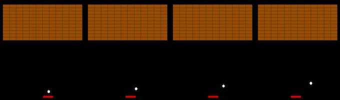
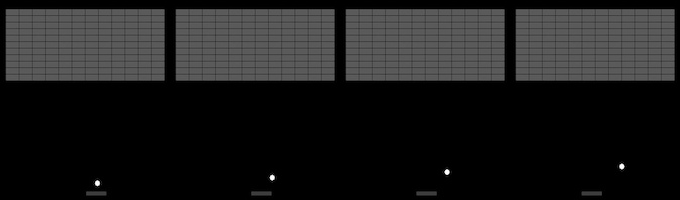

Atari Breakout Game with Reinforcement Learning
Reinforcement learning is a machine learning technique that enables an agent to learn in an interactive environment by trial and error using feedback from its own actions and experiences. In this blog, we will explore a program that uses reinforcement learning to play the Atari Breakout game.

This project follows the description of the Deep Q Learning algorithm described in this paper.
Installation Dependencies:
- Python 3.x
- NumPy
- OpenCV-Python
- PyGame
- PyTorch
How To Run
git clone https://github.com/virajbhartiya/Atari-Breakout-DeepQ.git
cd Atari-Breakout-DeepQ
To train the game:
python dqn.py trainTo test the pre-trained version:
python dqn.py test
The DQN Algorithm

Future Reward Function = Q

Loss Function

Network Architecture
Working directly with raw Atari frames, which are 210 × 160 (in our case it depends on pygame screen) pixel images with a 128 color palette, can be computationally demanding, so we apply a basic preprocessing step aimed at reducing the input dimensionality. The raw frames are preprocessed by first converting their RGB representation to gray-scale and down-sampling it to a 84×84 image.As input Q-Network is preprocessing to the last 4 frames of a history and stacks them to produce the input to the Q-function.This process can be visualized as the following figure:
And convert these images to gray scale...
And send these into the Q-Network.
So what we have done:
- Take last 4 frames
- Resize images to 84x84
- Convert frames to gray-scale
- Stack them 84x84x4 input array and send them into the Q-Network.
The input to the neural network consists is an 84 × 84 × 4 image produced by φ. The first hidden layer convolves 32 8 × 8 filters with stride 4 with the input image and applies a rectifier nonlinearity. The second hidden layer convolves 64 4 × 4 filters with stride 2, again followed by a rectifier nonlinearity.The third hidden layer is fully-connected and consists of 7x7x64 input with 512 output,followed by a rectifier nonlinearity(input tensor is flattened). The final hidden layer is fully-connected and consists of 512 rectifier units. The output layer is a fully-connected linear layer with a single output for each valid action. The number of valid actions are 1 for left and 0 for right action.